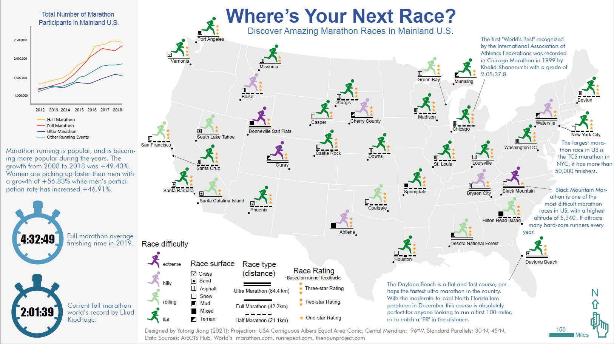
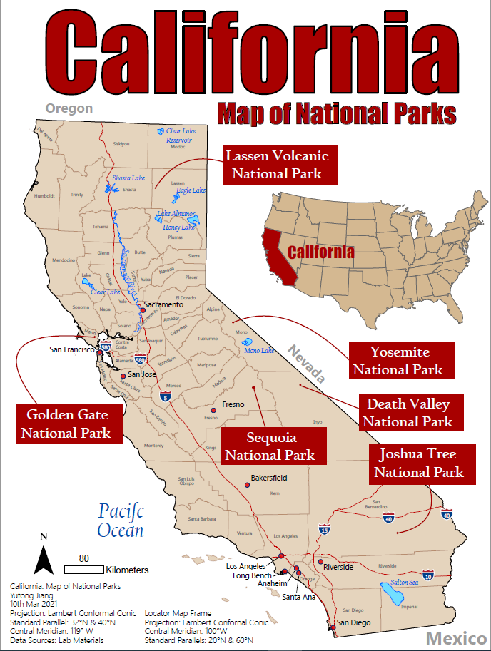
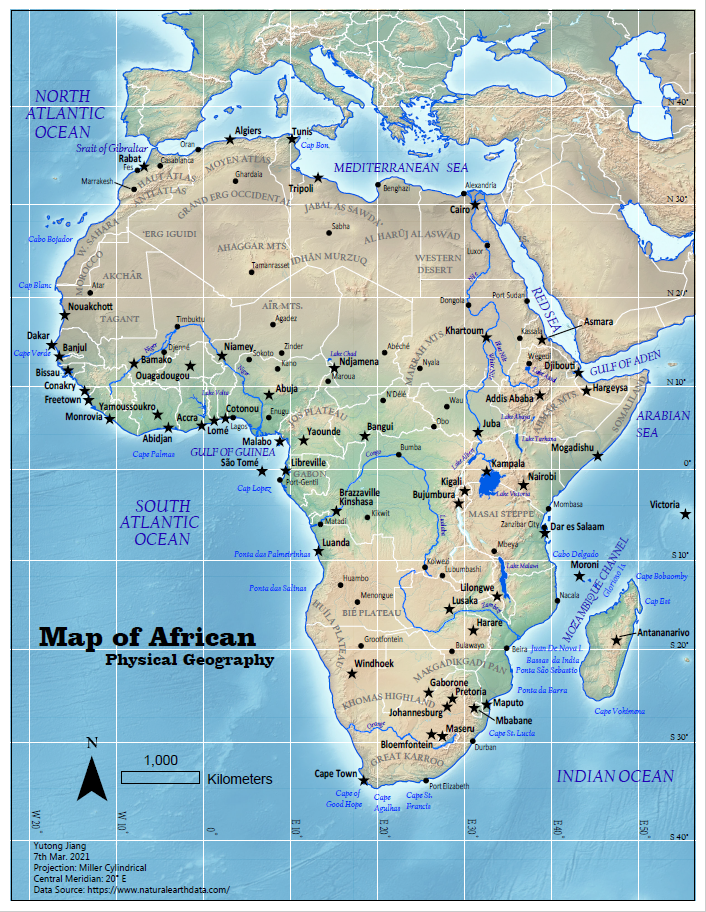
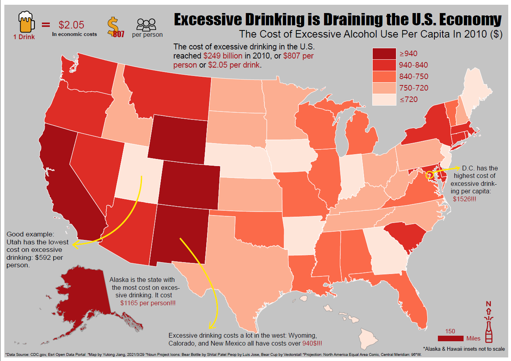
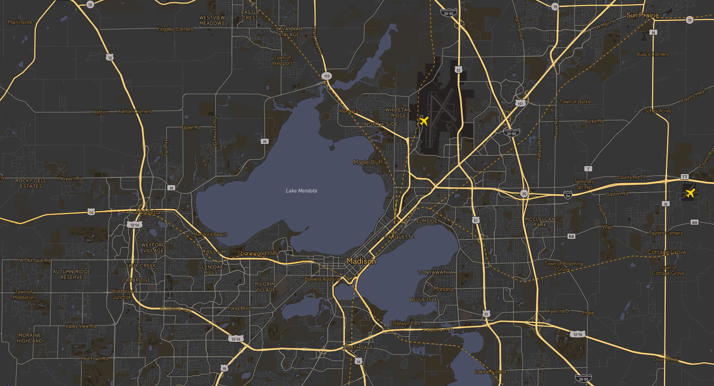

This projects uses Arcgis Pro and Illustrator to build. This project is an attempt to the multivariate map.
I used different components of the legends to represent the race information of marathon races in the United States.
I tried to create a map that can be seen as an art piece or a design


This is a reference map that describes the features of California, with interest points of National Parks.

This is a reference map that describes the features of California, with interest points of National Parks.

A thematic map using ArcGis Pro and Illustrator, using the amount of alcohol consumption as attributes, the map shows the United States alcohol consumption level by states.
Using arcgis Story Map to create a research story on talking about excessive drinking. Use bivariate maps and graphs to research on the relationship of excessive drinking, violation deaths rate, and liver cancer deaths rate. Explore how we should treat alcohol in the society.

This map box style is to create a style of aerial photos of the night city. I mainly uses yellow and golden as a main color hue to express the city features. I used icons styles combine the flat style and pseudo-materialization styles.
This story map tells the story of giant pandas: the hisory of giant pands; how giant pandas became endangered; how people act to protect giant pandas; and the giant pandas in the world. The story shows a complete and interesting story of human and giant pandas.